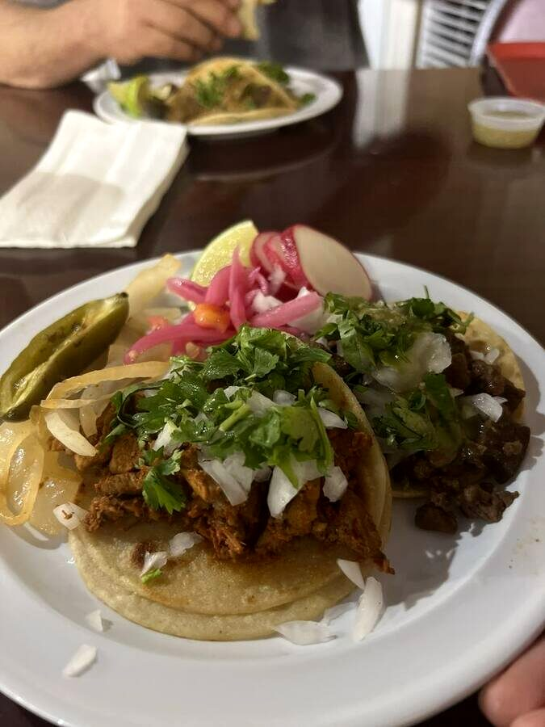
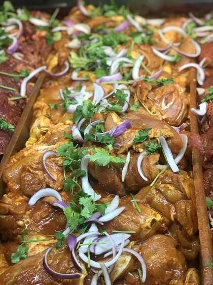

TAQUERÍA · CARNICERÍA · FONTANA
Tacos Sinaloa
17294 VALLEY BLVD · FONTANA, CA · OPEN DAILY 8—8
Hours
8:00 AM — 8:00 PM
Monday — Sunday
Location
17294 Valley Blvd
Fontana, CA 92335
Phone
(909) 823-6253
Call for today's menu
TAQUERÍA + CARNICERÍA
Taquería & Carnicería
Mexican food from the kitchen and a carnicería counter under one roof on Valley Blvd.


From the counter
Carnicería
A neighborhood meat counter alongside the taquería. Call or stop in to ask about today's selection.
Ask the counter ↗Valley Blvd., Fontana
Tacos Sinaloa y Carnicería17294 Valley Blvd
Fontana, CA 92335